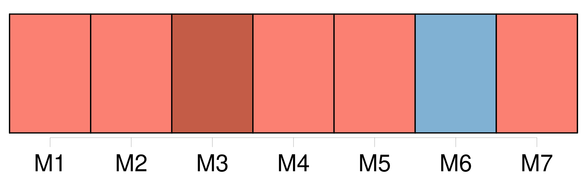
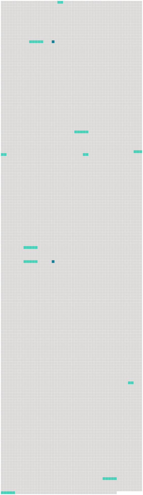

Longueur nb maillons : 12 mentions |
  |
La Commission est constituée de sections composées d'un ( 1 ) à quatre ( 4 ) commissaires désignés par [chaque membre] , qui peuvent être accompagnés des experts et conseillers dont ce membre juge la présence opportune. [7 phrases]
[Chaque membre de la Commission] peut également conserver [son] propre programme, conforme aux directives adoptées par la Commission ; [40 phrases]
La Commission établit un comité chargé de l'examen de l'application des mesures adoptées par la Commission, composé des représentants désignés à cet effet par [chaque membre de la Commission] , qui peuvent être accompagnés des experts et conseillers dont ces membres jugent la présence opportune. [17 phrases]
La Commission établit un comité scientifique consultatif, composé d'un représentant désigné par [chaque membre de la Commission] , ayant les qualifications appropriées ou l'expérience requise dans le domaine de compétence du comité, et qui peut être accompagné des experts ou conseillers dont [ce membre] juge la présence opportune. [36 phrases] Le montant de la contribution de [chaque membre de la Commission] au budget est défini conformément au schéma adopté et, selon les circonstances, amendé par la Commission, conformément à l'article IX, paragraphe 3, de la présente convention. [8 phrases]
[Chaque membre de la Commission] couvre les dépenses liées à [sa] participation aux réunions de la Commission et de ses organes subsidiaires. [56 phrases]
[Tout membre] peut consulter l'un ou plusieurs des membres pour tout différend relatif à l'interprétation ou à l'application des dispositions de la présente convention afin de parvenir à une solution satisfaisante pour tous dans les meilleurs délais. [46 phrases] [Tout membre de la Commission] peut proposer un amendement à la présente convention en fournissant au directeur le texte de la proposition d'amendement au moins soixante ( 60 ) jours avant une réunion de la Commission. [10 phrases] [Tout membre de la Commission] peut proposer un amendement à une annexe à la présente convention en fournissant au directeur le texte de la proposition d'amendement au moins soixante ( 60 ) jours avant une réunion de la Commission. |
 |
La ressource peut être téléchargée sur la page Ortolang
Si vous avez des questions ou vous voyez des erreurs, merci d'envoyer un mail à silvia.federzoni89@gmail.com
Site développé par S. Federzoni (contact)